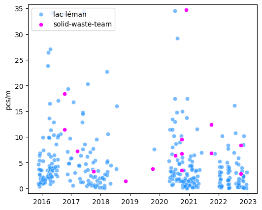
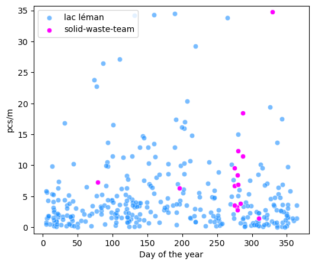
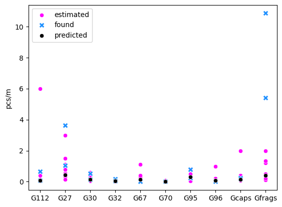
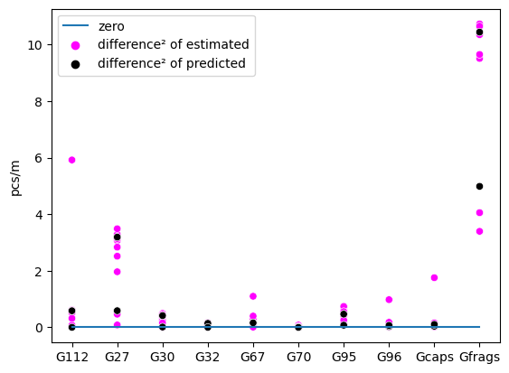

3. Testing 2023 predictions#
3.1. The solid waste experience#
This is the seventh year that the Solid Waste Team from the EPFL collect beach litter samples. In the maritime environment people have been measuring beach litter for decades. There is a standard protocol (Guidance on Monitoring Marine Litter in European Seas) for the EU area and threshold values for good environmental standing (Beach litter thresholds).
In Switzerland we started monitoring shoreline trash in 2015, it was not obvious to most observers (except for Prof Ludwig) why this might be of interest. However, by 2016 the EU realized that monitoring trash flows in rivers and lakes (monitoring trash in rivers) might be a good way to monitor flows into the oceans. All the while conservationists and biologists have raised concerns about the presence of plastics and diminshing biodiversity. The threshold established by the EU is based on the principle of precaution: the health effects are unknown, it is prudent to reduce contact with plastics when possible (Beach litter thresholds).
3.1.1. Observations and interpretations#
A beach litter survey is a detailed observation of the quantity and type of objects that were found at the beach. This observation is further defined by the time and place it occured. The location of the beach litter survey can be described numerically using a topographical map and some common overlay techniques in QGIS.
The information gathered from the map are part of the conditions that describe a survey location in particular. When beach litter surveys are considered in terms of their shared attributes we can use very simple techniques to find correlations between the conditions and the amount of trash found. For example, we can use Spearmans ranked correlation coefficient to quickly identify topographical attributes where specfic objects tend to accumulate. We wrote an article about it: (Near or far).
3.1.2. A unique problem and a unique solution#
Trash in the environment is a unique problem. In general we know how an object becomes litter: either on purpose or on accident, people create the conditions that increase the chance that an end of lifecycle object will evade the waste recovery system. Resources are employed to change the behavior of people and therefore improve the chance that an end of lifcycle object will be approriately discarded, (need reference).
There are public services that are dedicated to collecting inappropriately discarded items. Beach litter surveys are the observed result of the difference between the effect of the systems in place to reduce litter and the amount of litter produced. Indifferent of how that litter was produced or the measures in place to prevent it. Therefore this environmental assessment is reliant on individual observations. We can look to orntithologists and botanists for examples on how to interpret this data.
Asessing the environment:
What and how much are the volunteers likely to find?
This is the most honest answer that can be derived from the data.
There are 336 observations from 66 locations that describe the conditions under which 73,000 items were found on the 145km shore-line of Lake Geneva. Although this is only a small portion of the lake shore, this is still a good amount of samples in a six year period. It would be difficult to find a comparable stretch of coastline anywhere in the world that has that many samples in seven years. We can use that data to form our opinion of what we might find on October 5th.
Asessing the environment:
We can not tell you how much there is. Only how much you are likely to find.
What the difference is between the two statements is a philosophical discussion. In reality it may be hard to make such a distinction.
3.1.3. Reducing dimensionality: find the most common#
There are 228 different categories of objects. We are interested in what we might find and how likely we are to find it. Therefore we limit the search to items that were previously identified in at least 50% of the surveys AND/OR objects that are distinctive (easy to identify). This accounts for 74% of all objects previously recorded.
ssp.head()
| loc_date | slug | city | water_name_slug | date | doy | Project | code | pcs/m | quantity | |
|---|---|---|---|---|---|---|---|---|---|---|
| 29392 | ('parc-des-pierrettes', '2016-10-13') | parc-des-pierrettes | Saint-Sulpice (VD) | lac-leman | 2016-10-13 | 287 | Training | G1 | 0.00 | 0 |
| 29393 | ('parc-des-pierrettes', '2016-10-13') | parc-des-pierrettes | Saint-Sulpice (VD) | lac-leman | 2016-10-13 | 287 | Training | G10 | 0.02 | 0 |
| 29394 | ('parc-des-pierrettes', '2016-10-13') | parc-des-pierrettes | Saint-Sulpice (VD) | lac-leman | 2016-10-13 | 287 | Training | G100 | 0.79 | 0 |
| 29395 | ('parc-des-pierrettes', '2016-10-13') | parc-des-pierrettes | Saint-Sulpice (VD) | lac-leman | 2016-10-13 | 287 | Training | G101 | 0.00 | 0 |
| 29396 | ('parc-des-pierrettes', '2016-10-13') | parc-des-pierrettes | Saint-Sulpice (VD) | lac-leman | 2016-10-13 | 287 | Training | G102 | 0.00 | 0 |
| pcs/m | quantity | fail rate | % of total | ||
|---|---|---|---|---|---|
| code | object | ||||
| G112 | Industrial pellets (nurdles) | 0.16 | 2686 | 0.22 | 0.02 |
| G27 | Cigarette filters | 1.12 | 16458 | 0.85 | 0.15 |
| G30 | Food wrappers; candy, snacks | 0.54 | 6767 | 0.86 | 0.06 |
| G32 | Toys and party favors | 0.05 | 606 | 0.48 | 0.01 |
| G67 | Industrial sheeting | 0.30 | 3356 | 0.57 | 0.03 |
| G70 | Shotgun cartridges | 0.08 | 1030 | 0.48 | 0.01 |
| G89 | Plastic construction waste | 0.14 | 1970 | 0.51 | 0.02 |
| G95 | Cotton bud/swab sticks | 0.39 | 4777 | 0.74 | 0.04 |
| G96 | Sanitary pads /panty liners/tampons and applicators | 0.04 | 373 | 0.29 | 0.00 |
| Gcaps | Plastic bottle lids | 0.31 | 3953 | 0.84 | 0.04 |
| Gfoam | Expanded polystyrene | 1.02 | 12871 | 0.81 | 0.12 |
| Gfrags | Fragmented plastics | 1.34 | 17479 | 0.93 | 0.16 |
3.1.4. Assessing the environment#
The goal for todays excercise in 2023 is to determine how well our previous experiences inform us about the present. This is a simple process. There are four steps:
Start with your current understanding of the problem, consult the data here and form an opinion of how many of each item in the previous section you might find in 100 meters of shoreline. For example your might think 200 cigarette ends per 100m is a likely amount.
Use the provided form and note your estimate for each item in red ink. Put your name on the form and the name of the beach.
At the end of the litter survey note what you found for each item.
After the survey we will compare what we found to what we though we might find and the predicted amount using the model that was explained in the previous section.
3.1.5. Semester project#
The semester project (if you choose to do it) is about documenting the process of updating the models and accessing data. It could be a narrated screencast. Something that next years class will consult. For those who are interested in data-science or application development we would be using python, R, Git and Annaconda.
Specifically we would be adding survey results from this years experience:
The results for Gfoams
The reults for Plage de Pélican
However, if you have done a data-science course or if you have some experience with application development you might find this an easy project that will allow you to demonstrate those skills and some creativity. Those that know how to use Git and Annaconda will find this fairly easy.
3.2. Summary of previous results#
Lake Geneva sample totals
The total pcs/m for all surveys is given in figure 1 and figure 2. Samples after May 2021 are considered separately, this is a new six year sampling period for the lake. The distribution of the sample totals is given in table 2.
Fig. 3.1 Previous survey results from Lake Geneva#
summ_data = cbd.copy()
summ_data["use group"] = summ_data.code.map(lambda x: use_groups_i[x])
summ_data["ug"] = summ_data["use group"].apply(lambda x: abbrev_use_g[x])
summ_data[summ_data["use group"] == 'Personal consumption'].code.unique()
summ_data["date"] = pd.to_datetime(summ_data["date"], format="%Y-%m-%d")
sd_x = summ_data.groupby(["loc_date", "date", "city", "Project", "doy"], as_index=False).agg({"pcs/m": 'sum', 'quantity':'sum'})
sd_x_sp = sd_x[sd_x.city == 'Saint-Sulpice (VD)'].groupby(["loc_date", "date", "city", "Project", "doy"], as_index=False).agg({"pcs/m": 'sum', 'quantity':'sum'})
trg = summ_data[summ_data.Project == "before may 2021"].copy()
tst = summ_data[summ_data.Project == "after may 2021"].copy()
trg_c, tst_c = trg.city.nunique(), tst.city.nunique()
trg_lc, tst_lc = trg.slug.nunique(), tst.slug.nunique()
trg_q, tst_q = trg.quantity.sum(), tst.quantity.sum()
data_magnitude = [
{"before may 2021":trg_c, "after may 2021":tst_c},
{"before may 2021":trg_lc, "after may 2021":tst_lc},
{"before may 2021":trg_q, "after may 2021":tst_q}
]
cities_set = list(set([*trg.city.unique(), *tst.city.unique()]))
n_ind_cities = len(cities_set)
caption = f'The number of different locations and cities for the data. Note that there are {n_ind_cities} different municipalitites in all.'
data_summ_q = pd.DataFrame(data_magnitude, index=["Number of cities", "Number of locations", "Total objects"]).astype('int')
data_summ_q = data_summ_q.style.format(formatter="{:,}").set_table_styles(table_large_font).set_caption(caption)
styled = data_summ_q.format(formatter="{:,}", subset=pd.IndexSlice[['Total objects'], :])
glue("data-summ-q3", styled, display=False)
# all the data by date
the_99th_percentile = np.quantile(sd_x['pcs/m'].values, .99)
px = 1/plt.rcParams['figure.dpi'] # pixel in inches
fig, ax = plt.subplots(figsize=(600*px,500*px))
sns.scatterplot(data=sd_x, x='date', y='pcs/m',ax=ax, color="dodgerblue", alpha=0.6,label="lac léman")
sns.scatterplot(data=sd_x_sp, x='date', y='pcs/m', color="magenta", label="solid-waste-team", ax=ax)
ax.set_ylim(-1, the_99th_percentile)
ax.legend(loc="upper left")
ax.set_xlabel("")
glue("testing_training_chrono_2", fig, display=False)
plt.close()
# all the data day of year
fig, ax = plt.subplots(figsize=(600*px, 500*px))
sns.scatterplot(data=sd_x, x='doy', y='pcs/m', ax=ax, color="dodgerblue", alpha=0.6,label="lac léman")
sns.scatterplot(data=sd_x_sp, x='doy', y='pcs/m', color="magenta", label="solid-waste-team", ax=ax)
ax.set_ylim(-1, the_99th_percentile)
ax.set_xlabel("Day of the year")
glue('testing_training_doy_2', fig, display=False)
plt.close()
testing_vals= sd_x[sd_x.Project == "after may 2021"]['pcs/m'].values
training_vals = sd_x[sd_x.Project == "before may 2021"]['pcs/m'].values
train_quantiles = np.quantile(training_vals, some_quants)
test_quantiles = np.quantile(testing_vals, some_quants)
training_testing_summary = training_testing_compare(testing_vals, training_vals, test_quantiles, train_quantiles)
caption = "The observed values from the training and testing data. Remark that the testing data is only 22% of all the data. This is because we are only in the first year of a six year sampling period"
sum_table = training_testing_summary.set_caption(caption)
sum_table.format(formatter="{:.0f}", subset=pd.IndexSlice[['Number of samples'], :])
glue("data-summary_2", sum_table, display=False)
Figure 1, Table 2 |
Table 3, Figure 2 |
|||||||||||||||||||||
|---|---|---|---|---|---|---|---|---|---|---|---|---|---|---|---|---|---|---|---|---|---|---|
 |
|
|||||||||||||||||||||
|
 |
def sampler_from_multinomial(normed, xrange, nsamples):
choose = np.random.default_rng()
nunique = np.unique(normed)
norm_nunique = nunique/np.sum(nunique)
found = choose.multinomial(1, pvals=norm_nunique, size=nsamples)
ft = found.sum(axis=0)
samples = []
for i, asum in enumerate(ft):
if asum == 0:
samples += [0]
else:
choices = np.where(normed == nunique[i])
samps = choose.choice(choices[0], size=asum)
samples.extend(xrange[samps])
return samples, nunique, norm_nunique, ft
def period_pieces(start, end, data):
# the results in pieces per meter for one code from a subset of data
date_mask = (data["date"] >= start) & (data["date"] <= end)
period_one = data[date_mask]
pone_pcs = period_one.pcs_m.values
return pone_pcs
def period_k_and_n(data, xrange, add_one=False):
pone_k = [(data >= x).sum() for x in xrange]
pone_notk = [(data < x).sum() for x in xrange]
if add_one:
# if the use is for beta dist. This is the same
# as mulitplying the likelihood * uninform prior (0.5) or beta(1,1)
pone_k_n_minus_k = [(x+1, len(data) - x+1) for x in pone_k]
else:
pone_k_n_minus_k = [(x, len(data) - x) for x in pone_k]
return np.array(pone_k), np.array(pone_notk), np.array(pone_k_n_minus_k)
def period_beta(k):
return beta(*k)
def current_possible_prior_locations(landuse, locations, attribute):
# indentify the magnitude(s) of the attribute of interest from the
# locations in the current data there may be more than one, in this
# example we use all the possible magnitudes for the attribute
# locations = data[data.city == city].location.unique()
# magnitudes for the attribute from all the locations in the municipality
moa = magnitude_of_attribute = landuse.loc[locations][attribute].unique().astype('int')
# identify locations that have the same attribute by magnitude of attribute
possible_locations = landuse[landuse[attribute].isin(moa)].index
# remove the locations that are in the likelihood function
prior_locations = [x for x in possible_locations if x not in locations]
return locations, possible_locations, prior_locations
def make_expected(lh_tuple, prior_tuple, xrange):
res = []
betas=[]
# print(lh_tuple, prior_tuple)
for i in np.arange(len(xrange)):
alpha = prior_tuple[i][0]
betai = prior_tuple[i][1]
success = lh_tuple[i][0]
n = lh_tuple[i][1] + lh_tuple[i][0]
numerator = alpha + success
denominator = alpha + betai + n
if numerator == 0:
numerator = 1
abeta = beta(numerator, (betai + lh_tuple[i][1] + lh_tuple[i][0])).mean()
betas.append(abeta)
# print(alpha, betai, success, numerator, n, denominator)
if numerator >= denominator:
numerator = denominator-1
expected = numerator/denominator
res.append(expected)
return np.array(res), np.array(betas)
an_xrange = np.arange(0, 11)
comb_lu_agg = pd.read_csv("resources/data/u_comb_lu_cover_street_rivers.csv")
lu_scaled = comb_lu_agg.pivot(columns="use", values="scaled", index="slug").fillna(0)
lu_magnitude = comb_lu_agg.pivot(columns="use", values="magnitude", index="slug").fillna(0)
lu_binned = comb_lu_agg.pivot(columns="use", values="binned", index="slug").fillna(0)
# not_these = ['amphion', 'anthy', 'excenevex', 'lugrin', 'meillerie', 'saint-disdille', 'tougues']
merge_locations = cbd.slug.unique()
cbdu = cbd[~cbd.slug.isin(not_these)].merge(lu_scaled[lu_scaled.index.isin(merge_locations )], left_on="slug", right_index=True, validate="many_to_one", how="outer")
cbdu["use group"] = cbdu.code.map(lambda x: use_groups_i[x])
cbdu["ug"] = cbdu["use group"].apply(lambda x: abbrev_use_g[x])
cbdu[cbdu["use group"] == 'Personal consumption'].code.unique()
cbdu["date"] = pd.to_datetime(cbdu["date"], format="%Y-%m-%d")
attribute_columns = [x for x in lu_scaled.columns if x not in ["Geroell", "Stausee", "See", "Sumpf", "Stadtzentr", "Fels"]]
work_columns = [x for x in cbdu.columns if x not in ["Geroell", "Stausee", "See", "Sumpf", "Stadtzentr", "Fels"]]
cbdu = cbdu[work_columns].copy()
cbdu.rename(columns={"pcs/m":"pcs_m"}, inplace=True)
3.3. Expected survey results Saint Sulpice#
3.3.1. Predicted values using empirical Bayes method#
The method proposed in chapter two produced the following expected survey results for October 5, 2023 at Saint Sulpice:
city = 'Saint-Sulpice (VD)'
start, end = "2015-11-15", "2021-05-31"
index_range = (0.0, 10)
xrange = np.arange(*index_range, step=.01)
uninformed_tuple = np.array([(1,1) for x in xrange])
g_resa = cbdu.copy()
g_resa = g_resa.groupby(['loc_date', 'date','slug', 'city', 'Project', 'code'], as_index=False).agg({'pcs_m':'sum', 'quantity':'sum'})
g_resadt = g_resa.groupby(['loc_date', 'date','slug', 'city', 'Project'], as_index=False).agg({'pcs_m':'sum', 'quantity':'sum'})
# define the prior, likelihood data and likelihood locations
posterior_df = pd.DataFrame(index=xrange)
predictions = {}
for code in toi:
# code_index = 1
city_index = 0
attribute_index = 2
this_code = code
this_attribute = attribute_columns[attribute_index]
this_city = cois[city_index]
prior_data = g_resa[(g_resa.code == this_code)&(g_resa.city != city)&(g_resa.Project =="before may 2021")]
lh_data = g_resa[(g_resa.code == this_code)&(g_resa.city == city)]
# here the locations from Saint Sulpice are indentified
lh_locations = lh_data.slug.unique()
# remove any location with no land-use data
regions = lac_leman_regions[~lac_leman_regions.slug.isin(not_these)].copy()
# identify the region of interest
lh_regions = regions[regions.slug.isin(lh_locations)].alabel.unique()
# retireve any other survey locations in the region
regional_locations = regions[regions.alabel.isin(lh_regions)].slug.unique()
# retrieve the land use values of all locations in the region
land_use_data_of_interest = lu_binned.loc[regional_locations]
# the locations from Saint Sulpice as well as regional locations are passed
# to the current_possible_prior_locations method. The land use values are
# compared and the locations with similar land use values are identified.
locations, possible_locations, prior_locations = current_possible_prior_locations(land_use_data_of_interest, lh_locations, this_attribute)
prior_args = {
'prior_data':prior_data[prior_data.slug.isin(prior_locations)],
'start': start,
'end': end,
'xrange':xrange,
'uninformed_prior': uninformed_tuple,
}
# grid approximation of the prior
grid_prior, beta_prior, prior_k_n, prior_df, pcs = prior_distributions(**prior_args)
posterior_args = {
'lh_data':lh_data,
'start': start,
'end': "2022-12-31",
'un_informed': uninformed_tuple,
'informed_prior': prior_k_n
}
# grid approximation of posterior
informed, uninformed, beta_p, lh_pcs = posterior_distribution(**posterior_args)
# the quantiles from the observed data
prior_quants = np.quantile(pcs, some_quants)
post_quants = np.quantile(lh_pcs, some_quants)
# data frame with normalized results
post_df = make_results_df(prior_df.copy(), informed, source="Informed post", source_norm="Ip_n")
post_df = make_results_df(post_df, uninformed, source="Uninformed post", source_norm="Un_n")
# samples from posterior
sim_2024 = sampler_from_multinomial(post_df["Ip_n"].values, xrange, len(pcs) + len(lh_pcs))
sim_quants = np.quantile(sim_2024[0], some_quants)
predictions.update({this_code:sim_quants})
posterior_df[this_code]=informed
index = ['{:.0%}'.format(x) for x in some_quants]
pred_quants = pd.DataFrame(predictions, index=index)
objects = ["G112", "G27", "G30", "G32", "G67", "G70", "G95", "G96", "Gcaps", "Gfrags"]
pred_quants = pred_quants[objects]
caption = "Table 4: The 94% probability interval of the objects of interest for Saint Sulpice. The median value is used for the predictions"
pred_quants.style.format(precision=2).set_table_styles(table_large_font).set_caption(caption)
| G112 | G27 | G30 | G32 | G67 | G70 | G95 | G96 | Gcaps | Gfrags | |
|---|---|---|---|---|---|---|---|---|---|---|
| 3% | 0.00 | 0.00 | 0.00 | 0.00 | 0.00 | 0.00 | 0.00 | 0.00 | 0.00 | 0.00 |
| 25% | 0.00 | 0.00 | 0.00 | 0.01 | 0.01 | 0.00 | 0.00 | 0.01 | 0.03 | 0.00 |
| 48% | 0.03 | 0.42 | 0.13 | 0.04 | 0.14 | 0.00 | 0.30 | 0.08 | 0.12 | 0.35 |
| 50% | 0.08 | 0.45 | 0.13 | 0.04 | 0.16 | 0.00 | 0.32 | 0.09 | 0.14 | 0.41 |
| 52% | 0.10 | 0.46 | 0.13 | 0.04 | 0.17 | 0.00 | 0.34 | 0.09 | 0.14 | 0.50 |
| 75% | 0.54 | 0.66 | 0.48 | 0.06 | 0.31 | 0.04 | 0.52 | 0.12 | 0.23 | 0.82 |
| 97% | 1.39 | 1.29 | 0.91 | 0.11 | 2.83 | 0.09 | 1.00 | 0.22 | 0.41 | 2.75 |
Recall that the previous results from Saint Sulpice are not used to make the predictions. Only locations in the same region with similar land-use characteristics are used.
3.3.2. Estimates from participants#
After a classroom discusion and review of the previous years results (but not the predicted results) the participants made an estimate of how many they expect to find of each item of interest.
length_p = 49.3
estimated_p =[
[.16, 1.12, .54, .05, .30, .08, .39, .04, .31, 1.34],
[6, 3, .6, .1, .4, .03, .8, 1, 2, 1.34],
[.4, 1.5, .3, .1, 1.1, .01, .5, .2, .4, 2]
]
def make_rows(estimated, objects):
rows = []
for row in estimated:
row = {objects[i]: x for i,x in enumerate(row)}
rows.append(row)
return rows
found_p = [4, 51, 7, 2, 0, 0, 12, 1, 12, 266]
found_pm = [x/length_p for x in found_p]
pierrette_rows = make_rows(estimated_p, objects)
pierrette = pd.DataFrame(pierrette_rows)
found_pel = [4, 51, 7, 2, 0, 0, 12, 1, 12, 266]
found_pelm = [x/length_p for x in found_p]
estimated_td = [
[.16, 1.12, .54, .05, .30, .08, .39, .04, .31, 1.34],
[.15, .57,.24,.08,.05,.05,.16,.1,.14, .22],
[.05, .8, .2, .02, .15, .04, .3, .01, .25, 1.2],
[.1,.35,.15,.03, .05, .01, .06, .1, .15, .5],
[.07, .15, .05, .02, .01, 0, .04, .01, .08, .12],
[.15, .5, .3, .03, .01, 0, .05, .05, .2, .2]
]
length_td=16.5
found_td = [11, 60, 9, 3, 0, 0,13, 1, 3, 179]
found_tdm = np.array([x/length_td for x in found_td])
tiger_duck_rows = make_rows(estimated_td, objects)
tiger_duck = pd.DataFrame(tiger_duck_rows)
found = pd.DataFrame([found_tdm, found_pm], columns=objects)
fmelted = pd.melt(found, value_vars=found.columns)
fmelted["source"] = "found"
combined = pd.concat([tiger_duck, pierrette])
caption = "Table 5: The estimated amount in pcs/meter for each object that the participants expected to find."
combined.reset_index(inplace=True, drop=True)
combined.style.format(precision=2).set_table_styles(table_large_font).set_caption(caption)
| G112 | G27 | G30 | G32 | G67 | G70 | G95 | G96 | Gcaps | Gfrags | |
|---|---|---|---|---|---|---|---|---|---|---|
| 0 | 0.16 | 1.12 | 0.54 | 0.05 | 0.30 | 0.08 | 0.39 | 0.04 | 0.31 | 1.34 |
| 1 | 0.15 | 0.57 | 0.24 | 0.08 | 0.05 | 0.05 | 0.16 | 0.10 | 0.14 | 0.22 |
| 2 | 0.05 | 0.80 | 0.20 | 0.02 | 0.15 | 0.04 | 0.30 | 0.01 | 0.25 | 1.20 |
| 3 | 0.10 | 0.35 | 0.15 | 0.03 | 0.05 | 0.01 | 0.06 | 0.10 | 0.15 | 0.50 |
| 4 | 0.07 | 0.15 | 0.05 | 0.02 | 0.01 | 0.00 | 0.04 | 0.01 | 0.08 | 0.12 |
| 5 | 0.15 | 0.50 | 0.30 | 0.03 | 0.01 | 0.00 | 0.05 | 0.05 | 0.20 | 0.20 |
| 6 | 0.16 | 1.12 | 0.54 | 0.05 | 0.30 | 0.08 | 0.39 | 0.04 | 0.31 | 1.34 |
| 7 | 6.00 | 3.00 | 0.60 | 0.10 | 0.40 | 0.03 | 0.80 | 1.00 | 2.00 | 1.34 |
| 8 | 0.40 | 1.50 | 0.30 | 0.10 | 1.10 | 0.01 | 0.50 | 0.20 | 0.40 | 2.00 |
3.4. Survey results October 5, 2023 Saint Sulpice#
After the particpants completed the forms, surveys were conducted at three beaches within the city limits of Saint Sulpice. Only the forms for two beaches were returned.
caption="Table 6: The survey results of the objects of interest on October 5, 2023 in pieces per meter"
found_display = found.copy()
found_display.loc[0, "beach"] = "tiger-duck-beach"
found_display.loc[1, "beach"] = "parc-des-pierrettes"
found_display.set_index("beach", inplace=True, drop=True)
found_display.index.name = None
found_display.style.format(precision=2).set_table_styles(table_large_font).set_caption(caption)
| G112 | G27 | G30 | G32 | G67 | G70 | G95 | G96 | Gcaps | Gfrags | |
|---|---|---|---|---|---|---|---|---|---|---|
| tiger-duck-beach | 0.67 | 3.64 | 0.55 | 0.18 | 0.00 | 0.00 | 0.79 | 0.06 | 0.18 | 10.85 |
| parc-des-pierrettes | 0.08 | 1.03 | 0.14 | 0.04 | 0.00 | 0.00 | 0.24 | 0.02 | 0.24 | 5.40 |
3.5. Survey results October 5, 2023 Saint Sulpice#
After the particpants completed the forms, surveys were conducted at three beaches within the city limits of Saint Sulpice. Only the forms for two beaches were returned.
| G112 | G27 | G30 | G32 | G67 | G70 | G95 | G96 | Gcaps | Gfrags | |
|---|---|---|---|---|---|---|---|---|---|---|
| tiger-duck-beach | 0.67 | 3.64 | 0.55 | 0.18 | 0.00 | 0.00 | 0.79 | 0.06 | 0.18 | 10.85 |
| parc-des-pierrettes | 0.08 | 1.03 | 0.14 | 0.04 | 0.00 | 0.00 | 0.24 | 0.02 | 0.24 | 5.40 |
3.6. Results: Estimated, found and predicted#
It appears that both the participants and the model underestimated the amount of plastic fragments. Recall that the participants were given the cumulative results for these objects, table 1.
Figure 3 |
|---|
 |
Figure 3: The Estimated, observed and predicted results for the objects of interest, Saint Sulpice October 5, 2023 |
The predicted values from the model were all closer than the predicted values by the participants, table 7. In total 17/20 oserved results fell within the 96% probability interval predicted by the model, 7/20 fell within the 50% probability interval, Annex: table 8. Of the objects not within the 96% interval there is:
Fragmented plastics, (both surveys)
Cigarette ends
Toys and party favors
From figure 4 we can see how close the predictions and the estimates are.
Figure 4 |
|---|
 |
Figure 4: The root of the squared difference between observed estimated and predicted, Saint Sulpice October 5, 2023 |
| average | ||
|---|---|---|
| source | difference² of estimated | difference² of predicted |
| G112 | 1.07 | 0.29 |
| G27 | 2.32 | 1.89 |
| G30 | 0.31 | 0.21 |
| G32 | 0.11 | 0.07 |
| G67 | 0.26 | 0.16 |
| G70 | 0.03 | 0.00 |
| G95 | 0.52 | 0.27 |
| G96 | 0.15 | 0.05 |
| Gcaps | 0.26 | 0.07 |
| Gfrags | 8.11 | 7.71 |
3.7. Discussion#
There were three surveys completed, two are reflected in the report. Neither the the estimated amounts from the particpants or the survey results were returned for the third survey. On location the participants were shown examples of the objects of interest. The limits of the survey area were defined and the survey was conducted in small groups. The objects found on the beach were separated and counted on location. The identification or the differentiation of fragmented plastics and foams remains difficult for new participants. This is in one part due to the constraints of time and on the other to the lack of experience. Many times what initially appears to be an unidentifiable piece of plastic can actually be placed in a more precise category with reasonable certainty. The new paritcipants do not have the time to consider other possibilities or simply are unaware of the original use of the item in questions.
Many participants used the previous aggregated survey results to estimate the expected values. This reasonable strategy produced estimates that were very close to the predicted survey results. This suggests that previous survey results can serve as an indicator for expected results as long as the objects have been identified correctly and consistently in the past. Yet, from table 7 it is clear that predictions are more accurate when a formal method is used.
3.8. Conclusions#
From this experience we conclude that the expected values in table 4 do represent probable beach-litter densities in the region.
3.8.1. Next steps#
Make hierarchical model
3.9. Annex#
3.9.1. The accuracy of the predictions in relation to what was found#
| object | within 96% HDI | within 50% HDI | |
|---|---|---|---|
| 0 | G112 | True | False |
| 1 | G27 | False | False |
| 2 | G30 | True | False |
| 3 | G32 | False | False |
| 4 | G67 | True | False |
| 5 | G70 | True | False |
| 6 | G95 | True | False |
| 7 | G96 | True | True |
| 8 | Gcaps | True | True |
| 9 | Gfrags | False | False |
| 0 | G112 | True | True |
| 1 | G27 | True | False |
| 2 | G30 | True | True |
| 3 | G32 | True | True |
| 4 | G67 | True | False |
| 5 | G70 | True | False |
| 6 | G95 | True | True |
| 7 | G96 | True | True |
| 8 | Gcaps | True | False |
| 9 | Gfrags | False | False |
within 96% HDI 0.80
within 50% HDI 0.35
dtype: float64
within 96% HDI 16
within 50% HDI 7
dtype: int64
This script updated 21/03/2024 in Biel, CH
❤️ what you do everyday: analyst at hammerdirt
Git repo: https://github.com/hammerdirt-analyst/solid-waste-team.git
Git branch: review
pandas : 2.0.3
matplotlib: 3.7.1
seaborn : 0.12.2
numpy : 1.25.2